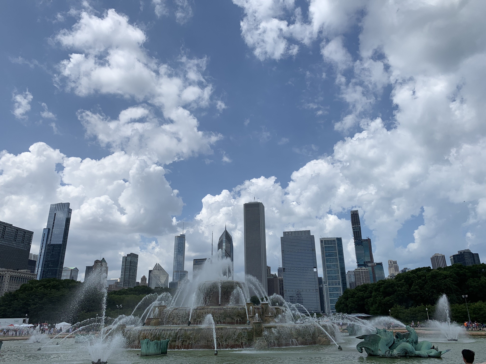
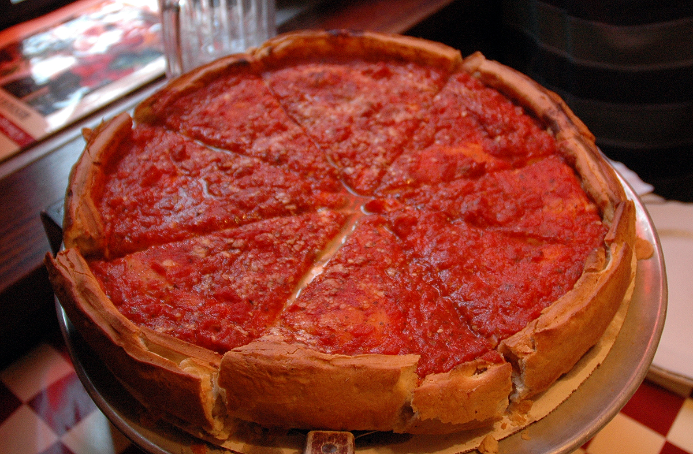
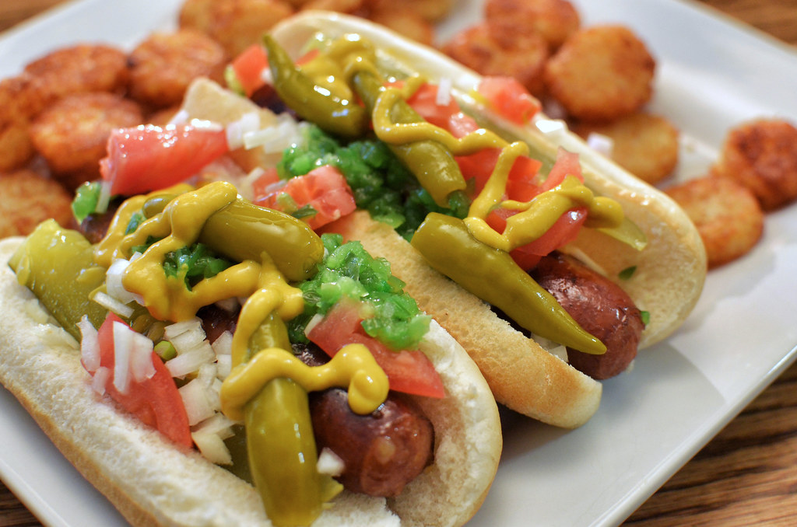

Introduction
Click below to view contentClick to view the introduction
Located on the shores of freshwater Lake Michigan, Chicago was incorporated as a city in 1837 near a portage between the Great Lakes and the Mississippi River watershed and grew rapidly in the mid-19th century. Chicago, officially the City of Chicago, is the most populous city in the U.S. state of Illinois and the third most populous city in the United States. With an estimated population of 2,705,994 (2018), it is also the most populous city in the Midwestern United States. Chicago is the county seat of Cook County, the second most populous county in the US. Chicago is the principal city of the Chicago metropolitan area, often referred to as Chicagoland. At nearly 10 million people, the metropolitan area is the third most populous in the nation. The city is a hub for tourism and offers many attractions and activities. It is home to 8 professional sports teams and offers its own unique cuisine.
History
Mouse over to learn more about the history of ChicagoMouse over to show more about the history of Chicago
Activities
Mouse over to learn about activitiesMouse over to show more about things to do in Chicago
Sports
Mouse over to learn about the sports Chicago has to offerMouse over to show more about the sports in Chicago
Food
Mouse over to learn about Chicago's food sceneMouse over to show more about Chicago's famous food
 